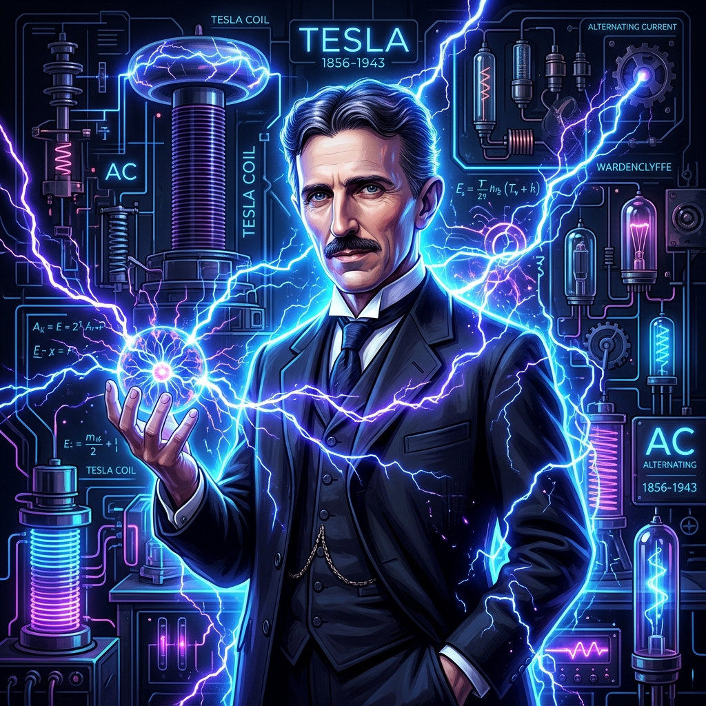
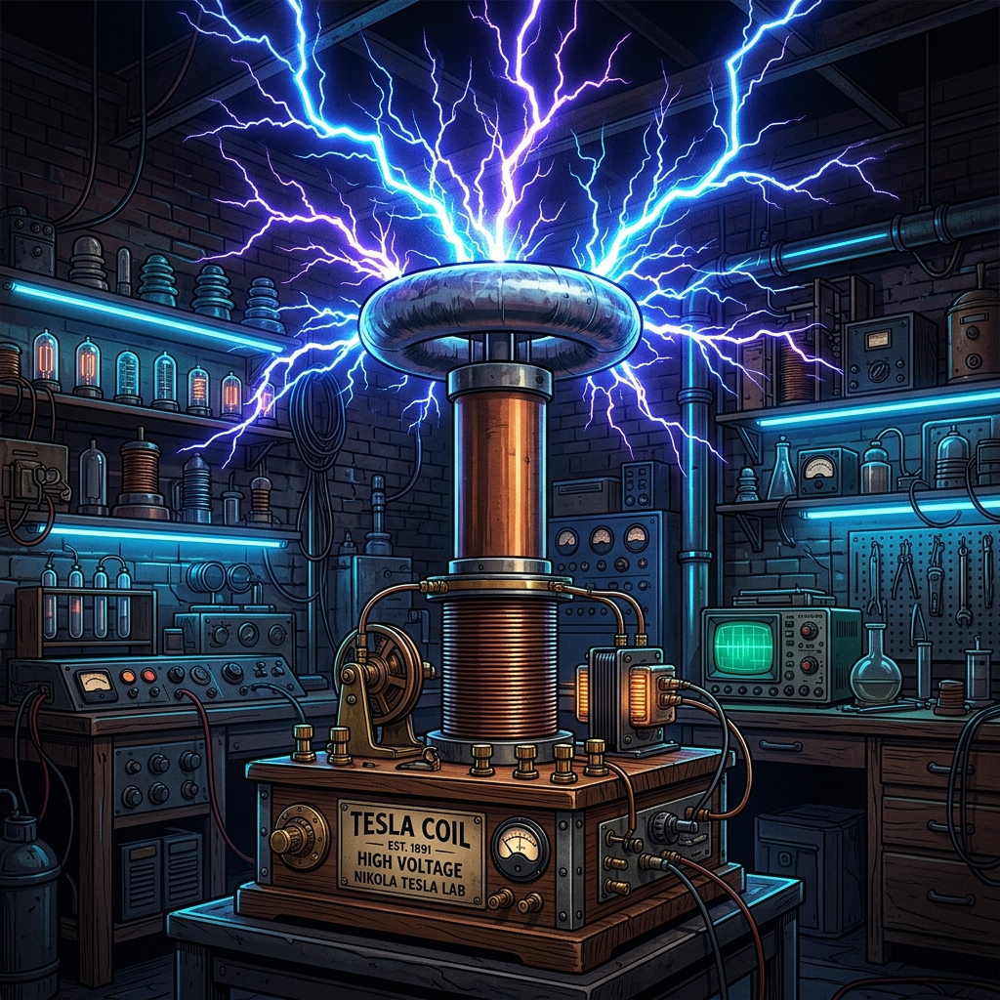

The Maverick of Electricity, Frequency, and Vibration
A visionary inventor, electrical engineer, and mechanical engineer whose groundbreaking developments in alternating current electricity, wireless transmission, and electromagnetic fields paved the way for modern civilization.

1856 – 1943
Born in Smiljan (modern-day Croatia) during a ferocious lightning storm, Tesla's life seemed destined to be defined by electrical energy. He possessed a photographic memory and an extraordinary ability to fully visualize his complex inventions in three dimensions before putting pencil to paper.
His relentless pursuit of wireless energy distribution, alternating current power systems, and remote automation challenged the status quo of his era. While often overshadowed by his commercial rival Thomas Edison, Tesla's mathematical and physical understanding was decades ahead of his contemporaries.
Patents Worldwide
Languages Spoken
Chicago World's Fair AC Demo
Standard AC Frequency Set by Tesla
Born on July 10 during a lightning storm. The midwife remarked, "He will be a child of darkness," to which his mother replied, "No, he will be a child of light."
Immigrated to New York City with four cents, a book of poetry, and a letter of recommendation to Thomas Edison, reading: "I know two great men; one is you, the other is this young man."
Invented the brushless alternating current (AC) induction motor, solving the massive mechanical wear issues of Edison's direct current (DC) dynamos.
Demonstrated the safety of AC power at the World's Columbian Exposition in Chicago by running electric currents through his own body to illuminate lightbulbs, defeating Edison's smear campaign.
Designed and built the world's first large-scale hydroelectric power plant at Niagara Falls, successfully transmitting electrical energy over long distances to Buffalo, NY.
Constructed the massive Wardenclyffe Tower in Long Island, intending to provide free, wireless electrical power and telecommunications around the globe, though funding was later pulled by J.P. Morgan.
Passed away peacefully in room 3327 of the New Yorker Hotel. His papers were seized by the FBI's Office of Alien Property due to fears of his "Death Ray" weapon, but his legacy was cemented in the scientific community.

An electrical resonant transformer circuit capable of producing high-voltage, low-current, high-frequency alternating current electricity. It formed the basis of wireless telegraphy and modern radio equipment.
Tesla developed alternating current generators, transformers, transmission lines, motors, and lighting. This system allowed electrical energy to be stepped up to extremely high voltages and transmitted hundreds of miles with minimal loss.
Tesla patented the basic architecture of radio transmission in 1897. Though Guglielmo Marconi was initially credited, the US Supreme Court overturned Marconi's patents in 1943, recognizing Tesla's prior work.
Tesla envisioned a world where power could be broadcast wirelessly across the globe. Drag the **Receiver Bulb** closer to the **Wardenclyffe Tower** to witness electromagnetic energy induction in action!